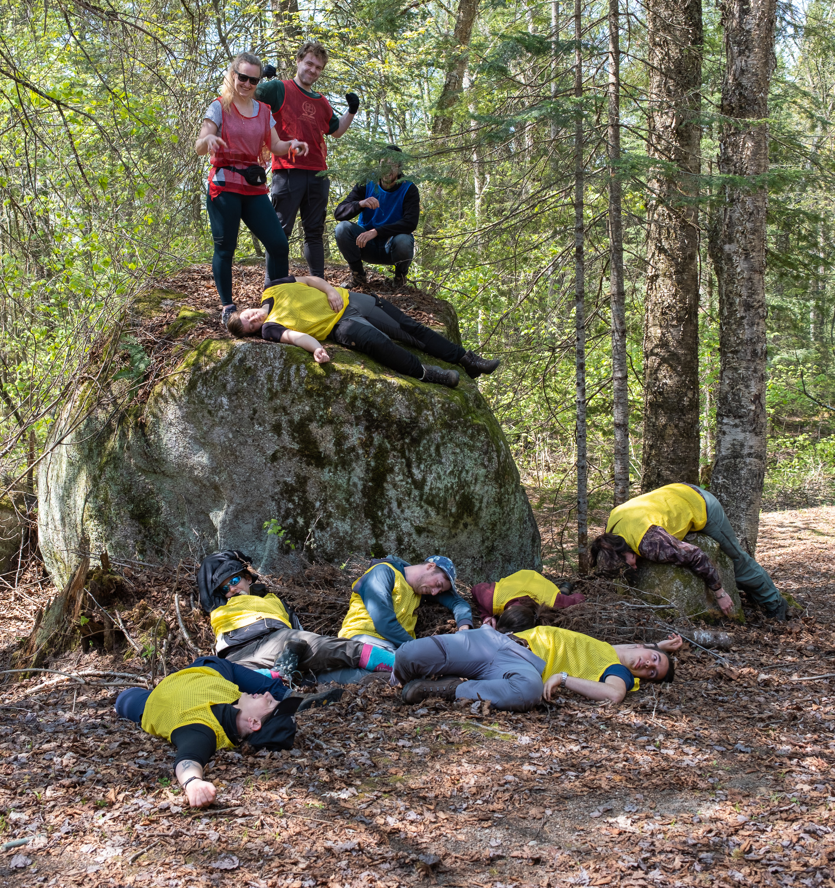

Teaching experience
Courses
BIO2041 Biostatistique 1
Course instructor: Dr. Alexandre Collin
Université de Montréal
course syllabus (fall 2022), admission
Head teaching assistant: fall 2022
Teaching assistant: summers 2022-23
Tutor: summers 2020-23
course description
Biological statistics. Parameters of a distribution. Probability distributions. Confidence intervals. Decision theory. Comparison of two samples. Correlation. Analysis of variance. Chi-square tests. RegressionBIO2042 Biostatistique 2
Course instructor: Dr. Alexandre Collin
Université de Montréal
course syllabus (winter 2023), admission
Teaching assistant: winter 2023
Tutor: winter 2023
course description
Advanced analysis of biological variation. Multiple regression, model II regression, multi-criteria classification and hierarchical ANOVA, analysis of covariance. Introduction to multivariate analysis.BIO2811 Dynamique des populations
Course instructor: Pr. Daniel Boisclair
Université de Montréal
course syllabus (winter 2022), admission
Grader: winters 2021-22
course description
Processes responsible for temporal variations in the abundance of animal and plant populations. Description and use of mathematical models to quantify and predict variations in population abundance.BIO1001 Méthodes de recherche en biologie (TP)
Course instructor: Pr. Éric Harvey
Université de Montréal
course syllabus (fall 2021), admission
Grader: fall 2021
course description
Presentation of the basic principles of research work, including laboratory practices, the use of libraries and bibliographic databases, and the acquisition, processing and presentation of scientific data.BIO6065 École d’été en synthèse écologique de données
Course instructor: Pr. Timothée Poisot
Université de Montréal
course syllabus (summer 2021), admission
Teaching assistant: summer 2021
course description
This one-week advanced training course will present, through projects, the most advanced data mining methods for working with ecological data.BIO3043 Théorie des réseaux
Course instructor: Pr. Timothée Poisot
Université de Montréal
course syllabus (fall 2020), admission
Teaching assistant: fall 2020
course description
Description of ecological communities from the perspective of network theory, structure of interactions between species, prediction of emergent properties of ecosystems, spatial and evolutionary dynamics of community structure.Workshops
Twitch workshops
Poisot lab
Twitch channel
Co-presenter:
Species distribution models in Julia (2022, June 20-21, virtual )
Data.Trek
Institute for Data Valorization (IVADO)
Data.Trek challenge
Lead presenter:
Machine learning and ecological network analysis in Julia (2020, March 5, Montreal )
intro to Mangal.jl, intro to EcologicalNetworks.jl, intro to Flux.jl
Co-presenter:
Introduction to R (2020, March 5, Montreal )
Programming mentor: winters 2020 and 22
Software carpentry
Computational Biodiversity Science & Services program (BIOS²)
software carpentry
Co-presenter:
Programming in R (2021, November 23-26, Rimouski )
Presentation assistant:
Introduction to Git (2021, November 22, Rimouski )
QCBS R workshops
Quebec Centre for Biodiversity Science (QCBS)
R workshops
Lead presenter:
workshop 5: Programming in R (2019, November 29, Montreal )
Presentation assistant:
workshop 6 : Generalized linear models in R (2021, March 11, virtual )
workshop 8 : Generalized additive models in R (2021, April 1, virtual )
Completed graduate courses
Credited courses
BIO6004 Communication scientifique
Fall 2018, Université de Montréal
course syllabus, admission
BIO6032 Biologie computationnelle et modélisation
Winter 2019, Université de Montréal
course syllabus, admission
BIO6033 Méthodes quantitatives en biologie
Winter 2019, Université de Montréal
admission
BIO6037 Analyse des réseaux écologiques
Fall 2019, Université de Montréal
course syllabus, admission
BIO6063 Travail dirigé 1
Supervisors: Pr. Jean-François Lapierre and Pr. Roxanne Maranger
Summer 2019, Université de Montréal
admission
BIO6065 École d’été en synthèse écologique de données
Summer 2019, Université de Montréal
admission
BIO6077 Analyse quantitative des données
Fall 2018, Université de Montréal
course syllabus, admission
BIO6115 Progrès en phylogénie systématique
Winter 2019, Université de Montréal
course syllabus, admission
BIO6260 Génomique microbienne
Fall 2018, Université de Montréal
course syllabus, admission
BIO860M Séminaire thématique en écologie
Winter 2021, UQAM
admission
GEO6321 Travaux pratiques en géomatique
Fall 2018, Université de Montréal
admission
MSO6028 Introduction aux théories de la mesure
Winter 2019, Université de Montréal
course syllabus, admission
Uncredited courses
ECL807 École d’été en modélisation de la biodiversité 2021
ECL807 Advanced Field School in Computational Ecology 2023
Summer 2023, Université de Sherbrooke and Université Laval
admission, Sentinelle Nord
